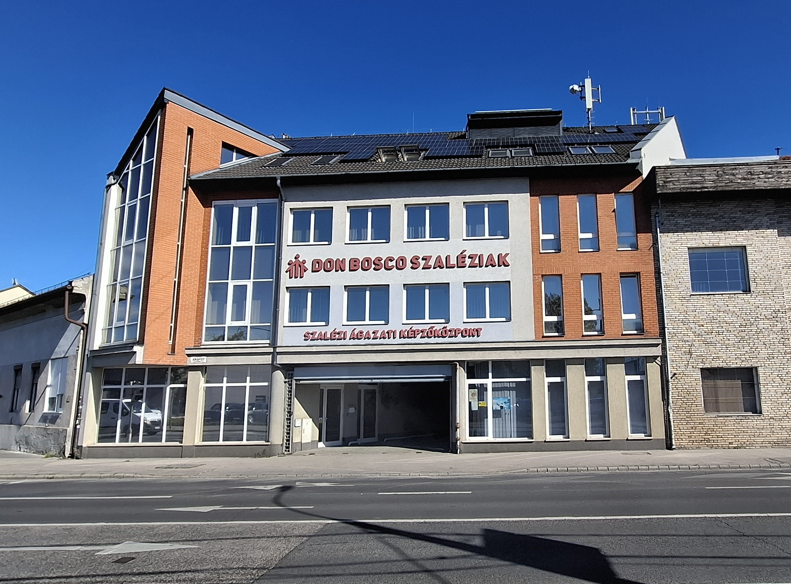
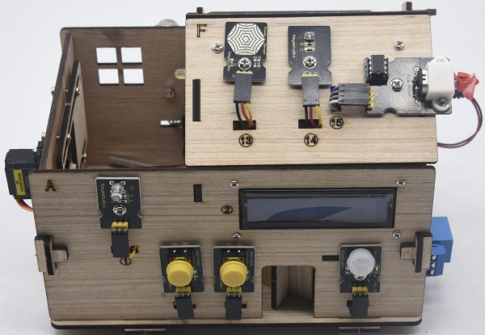

A 2025-ös nyári szakmai gyakorlatomat a budapesti Szalézi Ágazati Képzőközpontban töltöttem, ahol valódi ipari környezetben mélyíthettem el az informatikai ismereteimet. Ez az időszak sok újdonságot hozott, hiszen a modern webtechnológiáktól kezdve a hálózati infrastruktúrákig sokféle területen szereztem gyakorlati tapasztalatot. A webfejlesztés során megtanultam a HTML, CSS és Bootstrap magabiztos használatát a reszponzív oldalak készítéséhez, de megismerkedtem a verziókezeléssel (Git/GitHub), a WordPress-szel, valamint a Docker és a Microsoft Azure felhőalapú megoldásaival is.
A hálózati feladatok során szervereket telepítettem és konfiguráltam. Az elektronika alapjai mellett az Arduino-alapú fejlesztésekbe is betekintést nyertem. A gyakorlat egyik legmodernebb része a mesterséges intelligencia, különösen a ChatGPT professzionális alkalmazása volt, amit a munkafolyamatok gyorsítására és hatékonyabbá tételére használtunk.

Ezt a projektet egy háromfős csapat tagjaként valósítottam meg, ahol egy 15 lépésből álló fejlesztési folyamaton mentünk végig. A célunk egy teljesen automatizált, Arduino alapú Smart Home rendszer felépítése volt. Bár az elején még csak egyszerű LED-villogtatással kezdtünk, a végére már egy sor különböző szenzort és modult kellett egyszerre, összehangoltan kezelnünk.
A rendszerbe rengeteg funkciót zsúfoltunk bele, van benne gáz- és füstérzékelés riasztóval, mozgásérzékelő, ami a világítást és a hűtést vezérli, és az egészet Bluetooth-on keresztül is tudjuk irányítani. Számomra a legizgalmasabb rész a 1602 LCD kijelző felprogramozása és a szervomotoros, jelszavas beléptetőrendszer elkészítése volt.
A legnagyobb kihívást az jelentette, hogy a projekt végén az összes különálló modult egyetlen nagy, komplex kódba rakjuk össze, de az eredmény egy tényleg profin működő okosotthon-modell lett.
Ez a projekt volt az egyik legnagyobb kihívás eddig, főleg azért, mert 15 különálló kódot kellett egyetlen, stabilan futó rendszerré tenni. A legnagyobb tanulság számomra az volt, hogy mennyire fontos a tiszta kódírás és a folyamatos tesztelés, különösen csapatban dolgozva. Emlékszem, mekkora sikerélmény volt, amikor először sikerült Bluetooth-on keresztül, távolról irányítani a ventilátort vagy a világítást.
Megtanultam, hogy a hardveres és szoftveres hibák keresése rengeteg türelmet igényel, de a végén látni a kész, működő okosotthont minden befektetett órát megért.
